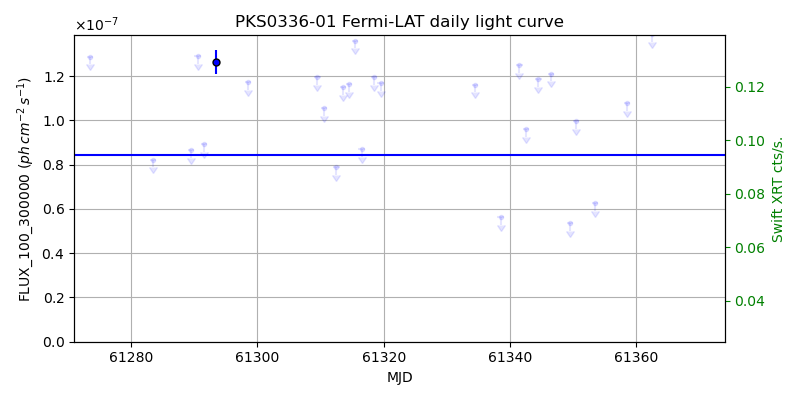
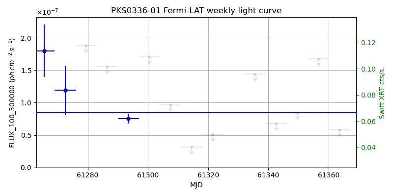
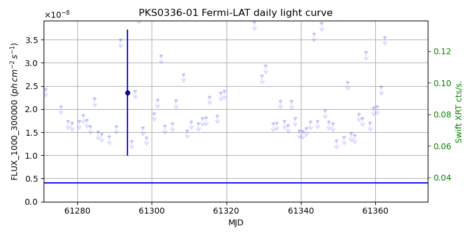

LAT Lightcurve site: https://fermi.gsfc.nasa.gov/ssc/data/access/lat/msl_lc/source/PKS_0336-01
Swift site: https://www.swift.psu.edu/monitoring/source.php?source=0336-019
NED: Query
Time of last update of this page: UT: 2026-11-28 16:14 (MJD: 61372.677)
| Property | Value |
|---|---|
| R.A. | 3:39:30.96 |
| Dec. | -1:46:37.2 |
| z | 0.852 |
| 3FGL SpectrumType | LogParabola |
| 3FGL PL Index | |
| 3FGL Flux_100_300000 | 8.42e-08 1 / (s cm2) |
| 3FGL Flux_1000_300000 | 4.08e-09 1 / (s cm2) |
| 3FGL Flux >200 GeV | 6.19e-13 1 / (s cm2) |
| 3FGL Extrap. Crab >200 GeV | 0.00 |
| 3FGL Flux After EBL Absorption >200GeV | 2.37e-14 1 / (s cm2) |
| 3FGL EBL Crab Fraction >200GeV | 0.00 |

| MJD | dMJD | Flux | dFlux | Frac3FGL | FracCrab>200GeV | EBLFracCrab>200GeV |
|---|---|---|---|---|---|---|
| 61367.50 | 0.50 | 9.71e-07 | 0.00e+00 | 0.00 | 0.00 | 0.00 |
| 61368.50 | 0.50 | 4.07e-06 | 0.00e+00 | 0.00 | 0.00 | 0.00 |
| 61369.50 | 0.50 | 9.71e-07 | 0.00e+00 | 0.00 | 0.00 | 0.00 |
| 61370.50 | 0.50 | 1.56e-06 | 0.00e+00 | 0.00 | 0.00 | 0.00 |
| 61371.50 | 0.50 | 1.59e-06 | 0.00e+00 | 0.00 | 0.00 | 0.00 |

| MJD | dMJD | Flux | dFlux | Frac3FGL | FracCrab>200GeV | EBLFracCrab>200GeV |
|---|---|---|---|---|---|---|
| 61335.50 | 3.50 | 1.44e-07 | 0.00e+00 | 0.00 | 0.00 | 0.00 |
| 61342.50 | 3.50 | 6.79e-08 | 0.00e+00 | 0.00 | 0.00 | 0.00 |
| 61349.50 | 3.50 | 8.46e-08 | 0.00e+00 | 0.00 | 0.00 | 0.00 |
| 61356.50 | 3.50 | 1.68e-07 | 0.00e+00 | 0.00 | 0.00 | 0.00 |
| 61363.50 | 3.50 | 5.82e-08 | 0.00e+00 | 0.00 | 0.00 | 0.00 |

| MJD | dMJD | Flux | dFlux | Frac3FGL | FracCrab>200GeV | EBLFracCrab>200GeV |
|---|---|---|---|---|---|---|
| 61367.50 | 0.50 | 1.25e-07 | 0.00e+00 | 0.00 | 0.00 | 0.00 |
| 61368.50 | 0.50 | 3.55e-07 | 0.00e+00 | 0.00 | 0.00 | 0.00 |
| 61369.50 | 0.50 | 1.81e-07 | 0.00e+00 | 0.00 | 0.00 | 0.00 |
| 61370.50 | 0.50 | 5.81e-07 | 0.00e+00 | 0.00 | 0.00 | 0.00 |
| 61371.50 | 0.50 | 2.60e-07 | 0.00e+00 | 0.00 | 0.00 | 0.00 |
| MJD | dMJD | Flux | dFlux | Frac3FGL | FracCrab>200GeV | EBLFracCrab>200GeV |
|---|---|---|---|---|---|---|
| 61335.50 | 3.50 | 2.69e-09 | 0.00e+00 | 0.00 | 0.00 | 0.00 |
| 61342.50 | 3.50 | 6.38e-09 | 0.00e+00 | 0.00 | 0.00 | 0.00 |
| 61349.50 | 3.50 | 6.24e-09 | 0.00e+00 | 0.00 | 0.00 | 0.00 |
| 61356.50 | 3.50 | 3.20e-09 | 0.00e+00 | 0.00 | 0.00 | 0.00 |
| 61363.50 | 3.50 | 1.23e-08 | 0.00e+00 | 0.00 | 0.00 | 0.00 |
--------------------------------------------------------- Using user-supplied coords: 3:39:30.96 -1:46:37.2 2000 --------------------------------------------------------- FLWO UT night of: 2026-11-29 Local Sid. @ Midnight: 04:08 Sunset (-15.0) (local, UT): 18:31 01:31 Sunrise (-15.0) (local, UT): 05:53 12:53 Moonrise (local, UT): 21:57 04:57 Moonset (local, UT): Moon phase: 0.72 --------------------------------------------------------- AzTime LSID UT Obj_el Obj_az Mn_el Mn_az Sep. --------------------------------------------------------- 18:31 22:39 01:31 11.6 99.2 -32.9 32.1 77.8 19:01 23:09 02:01 17.8 103.5 -29.4 38.9 78.2 19:31 23:39 02:31 23.9 108.1 -25.4 45.0 78.5 20:01 00:09 03:01 29.9 113.2 -21.0 50.6 78.9 20:31 00:39 03:31 35.7 119.0 -16.2 55.6 79.2 21:01 01:09 04:01 41.1 125.7 -11.1 60.2 79.5 21:31 01:39 04:31 46.0 133.5 -5.4 64.5 79.8 22:01 02:09 05:01 50.3 142.8 0.4 68.5 80.1 22:31 02:39 05:31 53.7 153.7 5.8 72.2 80.4 23:01 03:10 06:01 55.9 166.2 11.6 75.8 80.7 23:31 03:40 06:31 56.6 179.6 17.5 79.4 81.0 00:01 04:10 07:01 55.9 193.1 23.6 82.9 81.2 00:31 04:40 07:31 53.8 205.7 29.7 86.5 81.4 01:01 05:10 08:01 50.5 216.7 35.8 90.3 81.7 01:31 05:40 08:31 46.2 226.1 42.0 94.4 81.9 02:01 06:10 09:01 41.3 233.9 48.1 99.1 82.1 02:31 06:40 09:31 36.0 240.7 54.2 104.7 82.2 03:01 07:10 10:01 30.2 246.5 60.1 111.7 82.4 03:31 07:40 10:31 24.3 251.6 65.6 121.1 82.6 04:01 08:10 11:01 18.1 256.2 70.5 134.7 82.8 04:31 08:40 11:31 11.9 260.5 74.0 154.7 82.9 05:01 09:11 12:01 5.6 264.6 75.2 181.1 83.1 05:31 09:41 12:31 -0.3 268.6 73.6 206.8 83.2 05:53 10:02 12:53 -5.3 271.4 71.0 221.2 83.4 --------------------------------------------------------- Dark hours >55 deg.: 0.00